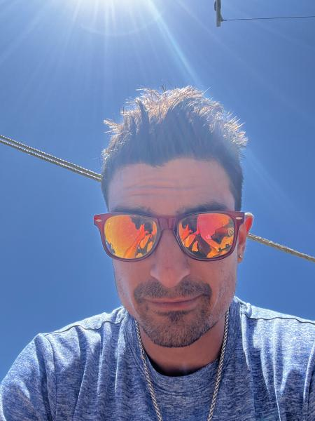
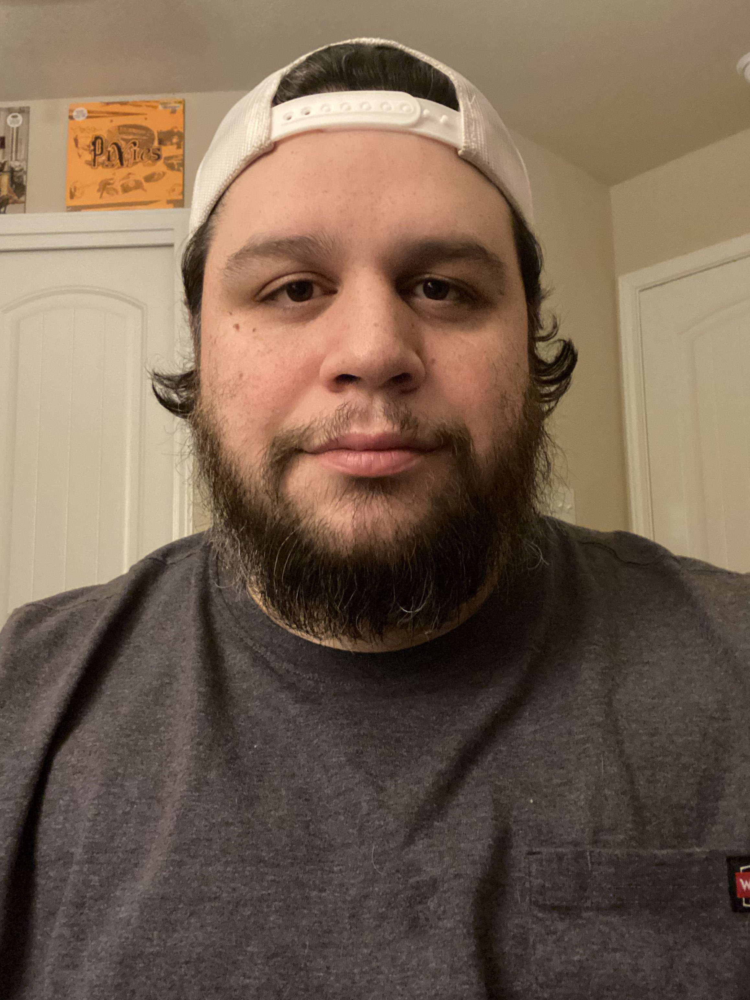
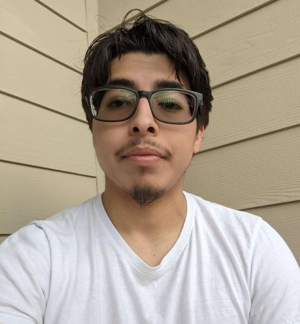
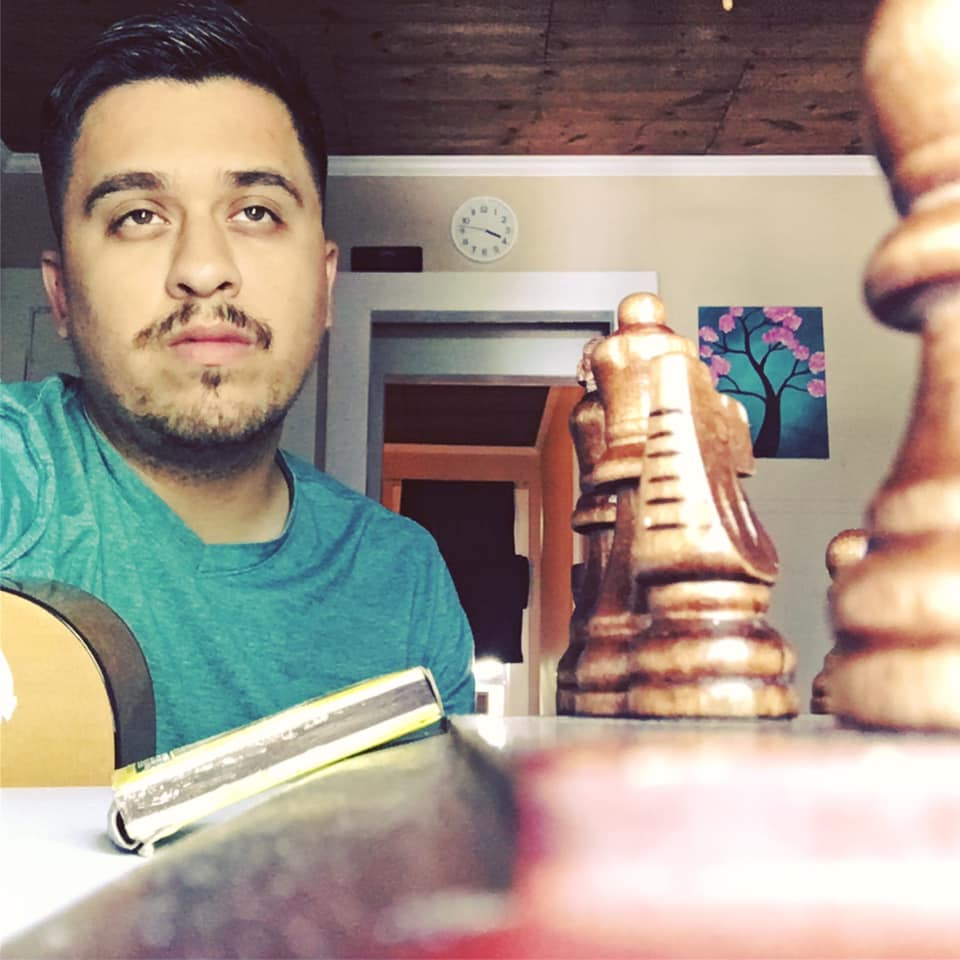

Jesse Van Winkle
Jesse (also known under the moniker, Pivitol Saint) is from Texas. He
is a family man who is devoted to philanthropic causes, art, and
software development.

Matt Marsch
Matt is an aspiring full-stack developer from San Antonio, Texas. He has a professional
background in mental health, he's a musician as well, and a big-time animal lover.

Angel Guerrero
Angel dedicates his effort into aiding in mental health for his interests of psychology and biology. He is a musician, a cat dad, enjoys movies, and attends concerts on his spare time.
"I have friends and family members who struggle with their own personal issues, including myself. It's not easy, so I hope our site can provide some relief to others."

Mark Martinez
Mark is devoted to the cause of mental health because of his own
personal battle with his own mental health struggles. He is a
musician, a father, an avid basketball lover, and a software developer
using his powers for good!